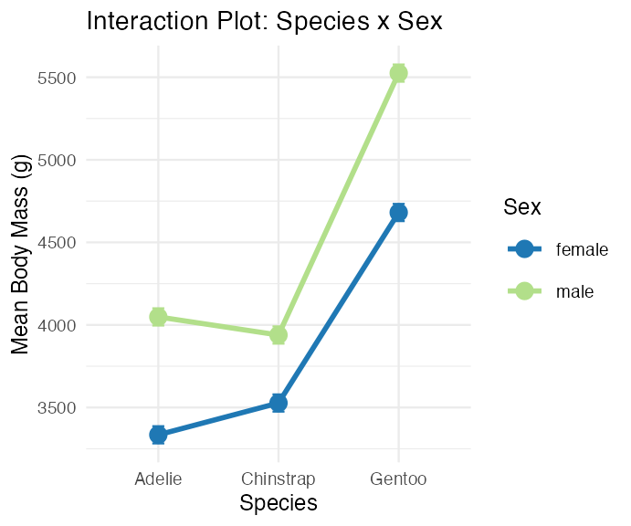
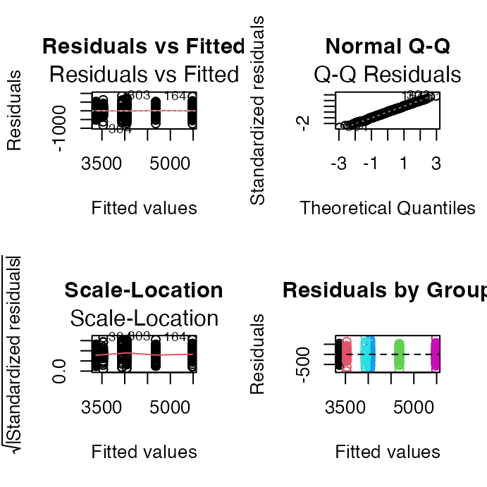
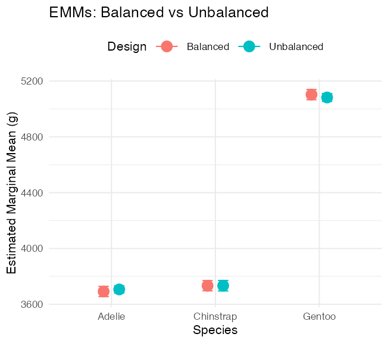

## # A tibble: 6 × 6
## species sex n mean_mass sd_mass se_mass
## <fct> <fct> <int> <dbl> <dbl> <dbl>
## 1 Adelie female 73 3369. 269. 31.5
## 2 Adelie male 73 4043. 347. 40.6
## 3 Chinstrap female 34 3527. 285. 48.9
## 4 Chinstrap male 34 3939. 362. 62.1
## 5 Gentoo female 58 4680. 282. 37.0
## 6 Gentoo male 61 5485. 313. 40.1Lecture: Two-Way ANOVA
Factorial designs
ANOVA
Factorial (two-factor) ANOVA, main effects and interactions, estimated marginal means, Type I/II/III sums of squares, and balanced vs. unbalanced designs — on the palmerpenguins species-by-sex dataset.
Where We Left Off
Covered last time — one-way ANOVA:
- Analysis of variance: single and multi-factor designs
- Examples: diatoms, circadian rhythms
- Predictor variables: fixed vs. random
- The ANOVA model
- Analysis and partitioning of variance
- Null hypothesis
- Assumptions and diagnostics
- Post-hoc F-tests — Tukey and others
- Reporting the results
Note
✅ Key idea from last lecture
One-way ANOVA asks “do these groups differ?” for one factor. Today: what happens when two factors act together — separately, and possibly interacting?

Part 1 · Factorial ANOVA — the Concept
Two-Factor Designs (2-Way ANOVA)
- Very common in ecology
- Can have more factors (e.g., 3-way ANOVA), but interpretation gets very challenging
- Most multifactor designs are factorial or nested
- We’ll cover a 2-factor ANOVA — this could be fertilizer and sunlight for plant biomass produced:
- each can have an effect independently
- the effect of one factor may interact with the other factor
- example: a low- vs. high-light treatment might affect biomass; fertilizer might also affect biomass; but under higher light, the high-fertilizer treatment may grow better than expected
Note
📖 Reference
Gotelli & Ellison, A Primer of Ecological Statistics, Ch. 10 — The Analysis of Variance, extends to factorial designs like the one covered today.


Factorial ANOVA: Design Structure
Consider two factors:
- Factorial/crossed: every level of B in every level of A


Factorial ANOVA: Effect Types
In factorial designs, we look at two types of factor effects:
- Main effect of each factor (pooling across the other factor)
- Interaction effects — is there a synergistic/antagonistic effect between factors?

Part 2 · Setting Up — the Penguin Data
Introduction to Two-Way ANOVA
Two-way ANOVA examines:
- Main effect of Factor A (Species)
- Main effect of Factor B (Sex)
- Interaction between A × B
- Balanced design: equal sample sizes in all cells
- Type III sums of squares for unbiased estimates — if the design is balanced, the choice of SS type doesn’t matter
Data Preparation — Creating a Balanced Design
The penguin data frame is unbalanced — there are unequal samples per cell.
## # A tibble: 3 × 3
## species female male
## <fct> <int> <int>
## 1 Adelie 73 73
## 2 Chinstrap 34 34
## 3 Gentoo 58 61## Minimum n = 34
## # A tibble: 3 × 3
## species female male
## <fct> <int> <int>
## 1 Adelie 34 34
## 2 Chinstrap 34 34
## 3 Gentoo 34 34Statistical model:
\[Y_{ijk} = \mu + \alpha_i + \beta_j + (\alpha\beta)_{ij} + \varepsilon_{ijk}\]
μ = grand mean, α_i = effect of species i, β_j = effect of sex j, (αβ)_ij = interaction effect, ε_ijk = random error.
Descriptive Statistics
## # A tibble: 6 × 6
## species sex n mean_mass sd_mass se_mass
## <fct> <fct> <int> <dbl> <dbl> <dbl>
## 1 Adelie female 34 3335. 260. 44.5
## 2 Adelie male 34 4049. 318. 54.5
## 3 Chinstrap female 34 3527. 285. 48.9
## 4 Chinstrap male 34 3939. 362. 62.1
## 5 Gentoo female 34 4681. 309. 53.0
## 6 Gentoo male 34 5525 274. 47.0
Part 3 · The Factorial Model
Factorial ANOVA Models
Factorial designs can be of 3 types:
- Model 1 — 2 fixed factors (the focus for today)
- Model 2 — 2 random factors
- Model 3 — 1 fixed, 1 random (mixed model) — often nested
Model 1 ANOVA:
\[y_{ijk} = \mu + \alpha_i + \beta_j + (\alpha\beta)_{ij} + \varepsilon_{ijk}\]
Tip
🖐 Notice
The formula looks identical to Model 2 and Model 3 — what changes between them is whether α, β are treated as fixed effects (specific groups you care about) or random effects (a sample from a larger population of possible groups).
Model Components — the Main Effects
\[y_{ijk} = \mu + \alpha_i + \beta_j + (\alpha\beta)_{ij} + \varepsilon_{ijk}\]
- \(y_{ijk}\): value of the k-th observation from the j-th and i-th combination of B and A (sex j of species i)
- μ: overall mean (overall mass)
- \(\alpha_i\): effect of the i-th level of A, pooling across all levels of B — \(\mu_i - \mu\) (difference between the average mass of all “species i” penguins and the overall mean)
Tip
🖐 Notice
Every effect in this model is defined as a deviation from a mean — the grand mean, or a group mean. This is exactly the same logic as a t-test or one-way ANOVA, just with more terms.
Model Components — the Interaction
\[y_{ijk} = \mu + \alpha_i + \beta_j + (\alpha\beta)_{ij} + \varepsilon_{ijk}\]
- \(\beta_j\): effect of the j-th level of B, pooling across all levels of A — \(\mu_j - \mu\) (difference between the average mass of all “sex j” penguins and the overall mean)
- \((\alpha\beta)_{ij}\): effect of the interaction of level i of A and level j of B — \(\mu_{ij} - \mu_i - \mu_j + \mu\). Does the effect of B depend on the level of A? (Is the effect of sex different across the 3 species?)
Note
✅ Key idea
The interaction term is what’s left over after you subtract out both main effects and the grand mean — it’s literally “the part the additive model can’t explain.”
Model Types and Interpretation
\[y_{ijk} = \mu + \alpha_i + \beta_j + (\alpha\beta)_{ij} + \varepsilon_{ijk}\]
- Model 2 ANOVA is rare in ecology
- Model 3 interpretation is different:
- \(\beta_j\): random variable measuring variance in y across all possible levels of B, pooling across A
- \((\alpha\beta)_{ij}\) is a random variable measuring variance of the interaction between A and B across all possible levels of B (“is the effect of A consistent across all possible levels of B that could have been chosen?”)
Warning
⚠️ Watch out!
Fixed vs. random isn’t about the data — it’s about the question. Are you interested in these specific 3 species (fixed), or in “species” as a general source of variation (random)?
Part 4 · Estimated Marginal Means
Estimated Marginal Means — Species
- Before we go further, we need to define estimated marginal means (EMMs)
- Balanced data: it’s just the means of the groups — easy
- Unbalanced data: it’s the mean of cell means, not a simple average of all raw observations
## Combined table with means and counts:
## # A tibble: 3 × 5
## species female_mean male_mean female_n male_n
## <fct> <dbl> <dbl> <int> <int>
## 1 Adelie 3369. 4043. 73 73
## 2 Chinstrap 3527. 3939. 34 34
## 3 Gentoo 4680. 5485. 58 61
##
##
## Regular means (WRONG for marginal means):
## # A tibble: 3 × 3
## species total_n regular_mean
## <fct> <int> <dbl>
## 1 Adelie 146 3706.
## 2 Chinstrap 68 3733.
## 3 Gentoo 119 5092.## Estimated Marginal Means for Species (CORRECT):
## # A tibble: 3 × 3
## species emm_mean calculation
## <fct> <dbl> <chr>
## 1 Adelie 3706. (3368.8 + 4043.5) / 2 = 3706.2
## 2 Chinstrap 3733. (3527.2 + 3939) / 2 = 3733.1
## 3 Gentoo 5082. (4679.7 + 5484.8) / 2 = 5082.3
##
##
## Comparison showing EMM calculation:
## # A tibble: 3 × 6
## species cell_mean_female cell_mean_male species_emm regular_mean difference
## <fct> <dbl> <dbl> <dbl> <dbl> <dbl>
## 1 Adelie 3369. 4043. 3706. 3706. 4.55e-13
## 2 Chinstrap 3527. 3939. 3733. 3733. 0
## 3 Gentoo 4680. 5485. 5082. 5092. -1.01e+ 1Estimated Marginal Means — Sex
- Balanced data: just the means of the groups
- Unbalanced data: mean of cell means
## Combined table with means and counts:
## # A tibble: 3 × 5
## species female_mean male_mean female_n male_n
## <fct> <dbl> <dbl> <int> <int>
## 1 Adelie 3369. 4043. 73 73
## 2 Chinstrap 3527. 3939. 34 34
## 3 Gentoo 4680. 5485. 58 61##
## Regular means sex (WRONG for marginal means):
## # A tibble: 2 × 3
## sex total_n regular_mean
## <fct> <int> <dbl>
## 1 female 165 3862.
## 2 male 168 4546.
##
##
## Estimated Marginal Means for Sex (CORRECT):
## # A tibble: 2 × 3
## sex emm_mean calculation
## <fct> <dbl> <chr>
## 1 female 3859. (3368.8 + 3527.2 + 4679.7) / 3 = 3858.6
## 2 male 4489. (4043.5 + 3939 + 5484.8) / 3 = 4489.1
##
##
## Comparison showing difference between regular and marginal means:
## # A tibble: 2 × 5
## sex total_n regular_mean emm_mean difference
## <fct> <int> <dbl> <dbl> <dbl>
## 1 female 165 3862. 3859. -3.68
## 2 male 168 4546. 4489. -56.6Part 5 · The Two-Way ANOVA Table
ANOVA Table Structure
- \(SS_{total} = SS_A + SS_B + SS_{AB} + SS_{residual}\)
- \(SS_{total} = \sum(Y - \bar{Y})^2\)
- \(SS_{residual}\): the difference between each observation and its cell mean, summed over all observations
| Source | df |
|---|---|
| A | p − 1 |
| B | q − 1 |
| AB | (p−1)(q−1) |
| Residual | pq(n−1) |
| Total | pqn − 1 |
where p = levels of A, q = levels of B, n = replicates per cell.
SSA: Factor A Effects
- \(SS_A\) is the SS of differences between each marginal mean of A and the overall mean
- If A is species, take the EMMs for factor A and subtract from the overall mean


SSB: Factor B Effects
- \(SS_B\) is the SS of differences between each marginal mean of B and the overall mean
- If B is sex, take the EMMs for factor B and subtract from the overall mean
SSAB: Interaction Effects
\(SS_{AB}\) is the SS of cell means minus marginal means plus the overall mean.

F-Ratio Calculations
SS converts to MS; F-ratio calculations differ depending on whether factors are fixed, random, or mixed.
| Source | A, B fixed | A, B random | A fixed, B random |
|---|---|---|---|
| A | \(MS_A/MS_{Res}\) | \(MS_A/MS_{AB}\) | \(MS_A/MS_{AB}\) |
| B | \(MS_B/MS_{Res}\) | \(MS_B/MS_{AB}\) | \(MS_B/MS_{AB}\) |
| AB | \(MS_{AB}/MS_{Res}\) | \(MS_{AB}/MS_{Res}\) | \(MS_{AB}/MS_{Res}\) |
Hypotheses — Both Factors Fixed
3 hypotheses are tested in a two-way factorial ANOVA: A, B, A×B. Both factors fixed:
- \(H_0(A)\): \(\mu_1 = \mu_2 = ... = \mu_p\) (no difference in marginal means of A, pooling across B)
- \(H_0(B)\): \(\mu_1 = \mu_2 = ... = \mu_q\) (no difference in marginal means of B, pooling across A)
- \(H_0(AB)\): \(\mu_{ij} - \mu_i - \mu_j + \mu = 0\) (no interaction effect)
Tip
🖐 Notice
These are exactly the two main-effect hypotheses from a one-way ANOVA, plus one new hypothesis just for the interaction.
Hypotheses — Mixed Model
3 hypotheses: A, B, A×B. One fixed, one random:
- \(H_0(A)\): \(\mu_1 = \mu_2 = ... = \mu_p\) (no difference in marginal means of A, pooling across B)
- \(H_0(B)\): \(\sigma^2_B = 0\) (no added variance due to levels of B that could have been used)
- \(H_0(AB)\): \(\sigma^2_{AB} = 0\) (no added variance due to interaction between all levels of A and B that could have been used)
Warning
⚠️ Watch out!
Notice the switch from “means are equal” (fixed) to “variance is zero” (random) — that’s the fundamental difference in what a random-effect hypothesis is even asking.
Part 6 · Fitting the Balanced Model
Example Study Details
Let’s try the example with the palmerpenguins package data:
- Effect of species and sex on
body_mass_g - 3 species (Factor A)
- 2 sexes (Factor B)
- 34 replicates in each cell
Two-Way ANOVA with Type III Sums of Squares
##
## Call:
## lm(formula = body_mass_g ~ species * sex, data = balanced_df)
##
## Residuals:
## Min 1Q Median 3Q Max
## -827.21 -178.13 6.25 175.00 861.03
##
## Coefficients:
## Estimate Std. Error t value Pr(>|t|)
## (Intercept) 4175.86 21.23 196.727 < 2e-16 ***
## species1 -484.31 30.02 -16.134 < 2e-16 ***
## species2 -442.77 30.02 -14.750 < 2e-16 ***
## sex1 -328.31 21.23 -15.467 < 2e-16 ***
## species1:sex1 -28.68 30.02 -0.955 0.341
## species2:sex1 122.43 30.02 4.078 6.57e-05 ***
## ---
## Signif. codes: 0 '***' 0.001 '**' 0.01 '*' 0.05 '.' 0.1 ' ' 1
##
## Residual standard error: 303.2 on 198 degrees of freedom
## Multiple R-squared: 0.8596, Adjusted R-squared: 0.856
## F-statistic: 242.4 on 5 and 198 DF, p-value: < 2.2e-16## Type III Sums of Squares ANOVA:
## Anova Table (Type III tests)
##
## Response: body_mass_g
## Sum Sq Df F value Pr(>F)
## (Intercept) 3557308900 1 38701.5271 < 2.2e-16 ***
## species 87725999 2 477.2049 < 2.2e-16 ***
## sex 21988483 1 239.2224 < 2.2e-16 ***
## species:sex 1672776 2 9.0994 0.0001657 ***
## Residuals 18199467 198
## ---
## Signif. codes: 0 '***' 0.001 '**' 0.01 '*' 0.05 '.' 0.1 ' ' 1Understanding Type III SS
Type III sums of squares test each effect after adjusting for all other effects in the model:
- Species effect: tested after adjusting for sex and interaction
- Sex effect: tested after adjusting for species and interaction
- Interaction: tested after adjusting for both main effects
This is especially important for unbalanced designs, but we’re using it here for consistency with the next analysis.
## Effect Sizes (Eta-squared):
## Effect Eta_Squared
## 1 Species 0.67696748
## 2 Sex 0.16968160
## 3 Interaction 0.01290854Checking Model Assumptions
The four standard diagnostic plots, built automatically with ggfortify::autoplot().

Formal Tests — Normality and Homogeneity
The formal tests of normality of residuals and homogeneity of variances.
## Shapiro-Wilk Normality Test:
##
## Shapiro-Wilk normality test
##
## data: residuals(anova_model)
## W = 0.99612, p-value = 0.8886
## Levene's Test for Homogeneity:
## Levene's Test for Homogeneity of Variance (center = median)
## Df F value Pr(>F)
## group 5 0.7841 0.5622
## 198
## Number of outliers (|z| > 3): 0Part 7 · EMMs and Post-Hoc for the Balanced Model
Computing EMMs
## Species EMMs:
## species emmean SE df lower.CL upper.CL
## Adelie 3692 36.8 198 3619 3764
## Chinstrap 3733 36.8 198 3661 3806
## Gentoo 5103 36.8 198 5030 5175
##
## Results are averaged over the levels of: sex
## Confidence level used: 0.95
## Sex EMMs:
## sex emmean SE df lower.CL upper.CL
## female 3848 30 198 3788 3907
## male 4504 30 198 4445 4563
##
## Results are averaged over the levels of: species
## Confidence level used: 0.95
## Species by Sex EMMs:
## species sex emmean SE df lower.CL upper.CL
## Adelie female 3335 52 198 3232 3437
## Chinstrap female 3527 52 198 3425 3630
## Gentoo female 4681 52 198 4578 4783
## Adelie male 4049 52 198 3946 4151
## Chinstrap male 3939 52 198 3836 4042
## Gentoo male 5525 52 198 5422 5628
##
## Confidence level used: 0.95## [1] "Species pairwise comparisons:"
## contrast estimate SE df t.ratio p.value
## Adelie - Chinstrap -41.5 52 198 -0.799 0.7041
## Adelie - Gentoo -1411.4 52 198 -27.145 <0.0001
## Chinstrap - Gentoo -1369.9 52 198 -26.346 <0.0001
##
## Results are averaged over the levels of: sex
## P value adjustment: tukey method for comparing a family of 3 estimates
## [1] "Species comparisons within sex:"
## sex = female:
## contrast estimate SE df t.ratio p.value
## Adelie - Chinstrap -193 73.5 198 -2.620 0.0256
## Adelie - Gentoo -1346 73.5 198 -18.310 <0.0001
## Chinstrap - Gentoo -1154 73.5 198 -15.690 <0.0001
##
## sex = male:
## contrast estimate SE df t.ratio p.value
## Adelie - Chinstrap 110 73.5 198 1.490 0.2979
## Adelie - Gentoo -1476 73.5 198 -20.079 <0.0001
## Chinstrap - Gentoo -1586 73.5 198 -21.569 <0.0001
##
## P value adjustment: tukey method for comparing a family of 3 estimatesPost F-Test of the Interaction
When the interaction is significant, we test the overall interaction and ignore the main effects!
## species sex emmean SE df lower.CL upper.CL .group
## Adelie female 3334.559 51.99448 198 3196.378 3472.740 a
## Adelie male 4048.529 51.99448 198 3910.349 4186.710 b
## Chinstrap female 3527.206 51.99448 198 3389.025 3665.387 a
## Chinstrap male 3938.971 51.99448 198 3800.790 4077.151 b
## Gentoo female 4680.882 51.99448 198 4542.702 4819.063 c
## Gentoo male 5525.000 51.99448 198 5386.819 5663.181 d
##
## Confidence level used: 0.95
## Conf-level adjustment: sidak method for 6 estimates
## P value adjustment: sidak method for 15 tests
## significance level used: alpha = 0.05
## NOTE: If two or more means share the same grouping symbol,
## then we cannot show them to be different.
## But we also did not show them to be the same.The Interaction Plot

Part 8 · Unbalanced Designs
Introduction to Unbalanced Designs
The challenge of unbalanced data: real-world data is often unbalanced — unequal sample sizes across groups, missing data patterns, natural variation in sampling.
Key issues: Type I, II, and III SS give different results; order of terms matters for Type I SS; marginal means ≠ simple averages, so interpretation becomes complex.
Statistical model (same as balanced): \(Y_{ijk} = \mu + \alpha_i + \beta_j + (\alpha\beta)_{ij} + \varepsilon_{ijk}\) — but parameter estimation differs!
## [1] "Unbalanced sample sizes:"
## # A tibble: 6 × 3
## species sex n
## <fct> <fct> <int>
## 1 Adelie female 73
## 2 Adelie male 73
## 3 Chinstrap female 34
## 4 Chinstrap male 34
## 5 Gentoo female 58
## 6 Gentoo male 61
## [1] "Total N = 333"
## [1] "Imbalance ratio = 2.15"
Type I (Sequential) SS
## Type I SS (Species -> Sex -> Interaction):
## Analysis of Variance Table
##
## Response: body_mass_g
## Df Sum Sq Mean Sq F value Pr(>F)
## species 2 145190219 72595110 758.358 < 2.2e-16 ***
## sex 1 37090262 37090262 387.460 < 2.2e-16 ***
## species:sex 2 1676557 838278 8.757 0.0001973 ***
## Residuals 327 31302628 95727
## ---
## Signif. codes: 0 '***' 0.001 '**' 0.01 '*' 0.05 '.' 0.1 ' ' 1
##
##
## Type I SS (Sex -> Species -> Interaction):
## Analysis of Variance Table
##
## Response: body_mass_g
## Df Sum Sq Mean Sq F value Pr(>F)
## sex 1 38878897 38878897 406.145 < 2.2e-16 ***
## species 2 143401584 71700792 749.016 < 2.2e-16 ***
## sex:species 2 1676557 838278 8.757 0.0001973 ***
## Residuals 327 31302628 95727
## ---
## Signif. codes: 0 '***' 0.001 '**' 0.01 '*' 0.05 '.' 0.1 ' ' 1
##
##
## Type I SS depends on order:
## Effect Order1_SS Order2_SS
## 1 Species 145190219 143401584
## 2 Sex 37090262 38878897How Type I SS works — sequential decomposition:
- First term gets all SS it can explain
- Second term gets SS after removing the first
- Third term gets SS after removing the first two
Problems with unbalanced data: order dependency, biased if factors are correlated, not invariant to coding.
Type III Sums of Squares
## [1] "Type III Sums of Squares:"
## Anova Table (Type III tests)
##
## Response: body_mass_g
## Sum Sq Df F value Pr(>F)
## (Intercept) 5232595969 1 54661.828 < 2.2e-16 ***
## species 143001222 2 746.924 < 2.2e-16 ***
## sex 29851220 1 311.838 < 2.2e-16 ***
## species:sex 1676557 2 8.757 0.0001973 ***
## Residuals 31302628 327
## ---
## Signif. codes: 0 '***' 0.001 '**' 0.01 '*' 0.05 '.' 0.1 ' ' 1
## [1] "Comparison of F-values:"
## Effect Type_I_F Type_III_F
## 1 Species 758.36 746.92
## 2 Sex 387.46 311.84
## 3 Interaction 8.76 8.76How Type III SS works — marginal decomposition: each effect tested after adjusting for all others.
Advantages: order invariant, tests hypotheses about unweighted means, standard in most software.
Disadvantages: lower power with missing cells, tests may not be orthogonal, requires careful interpretation.
## [1] "Effect Sizes (Type III):"
## Effect Eta_Squared
## 1 Species 0.6947
## 2 Sex 0.1450
## 3 Interaction 0.0081Manual SS Calculation, Step by Step
## [1] "Grand mean: 4207.1"
## [1] "Total SS: 215259666"
## [1] "Between-groups SS: 183957038"
## [1] "Within-groups SS: 31302628"
## [1] "Check: Between + Within = 215259666"## SS(Species alone): 145190219
## SS(Sex alone): 38878897
##
##
## Sum of main effects: 184069116
## Actual between SS: 183957038
##
##
## Difference (due to correlation): -112078
Note
✅ Key idea
Main effects don’t add up to the between-groups SS here because the effects aren’t orthogonal in an unbalanced design — proof that “unbalanced” really does change the arithmetic, not just the p-values.
Part 9 · EMMs and Diagnostics — the Unbalanced Model
Estimated Marginal Means — Unbalanced Data
## Species EMMs (model-based):
## species emmean SE df lower.CL upper.CL
## Adelie 3706 25.6 327 3656 3757
## Chinstrap 3733 37.5 327 3659 3807
## Gentoo 5082 28.4 327 5026 5138
##
## Results are averaged over the levels of: sex
## Confidence level used: 0.95
##
##
## Sex EMMs (model-based):
## sex emmean SE df lower.CL upper.CL
## female 3859 25.3 327 3809 3908
## male 4489 25.2 327 4440 4539
##
## Results are averaged over the levels of: species
## Confidence level used: 0.95
## contrast estimate SE df t.ratio p.value
## Adelie female - Chinstrap female -193 73.5 198 -2.620 0.0973
## Adelie female - Gentoo female -1346 73.5 198 -18.310 <0.0001
## Adelie female - Adelie male -714 73.5 198 -9.710 <0.0001
## Adelie female - Chinstrap male -604 73.5 198 -8.220 <0.0001
## Adelie female - Gentoo male -2190 73.5 198 -29.789 <0.0001
## Chinstrap female - Gentoo female -1154 73.5 198 -15.690 <0.0001
## Chinstrap female - Adelie male -521 73.5 198 -7.090 <0.0001
## Chinstrap female - Chinstrap male -412 73.5 198 -5.600 <0.0001
## Chinstrap female - Gentoo male -1998 73.5 198 -27.169 <0.0001
## Gentoo female - Adelie male 632 73.5 198 8.600 <0.0001
## Gentoo female - Chinstrap male 742 73.5 198 10.090 <0.0001
## Gentoo female - Gentoo male -844 73.5 198 -11.480 <0.0001
## Adelie male - Chinstrap male 110 73.5 198 1.490 0.6711
## Adelie male - Gentoo male -1476 73.5 198 -20.079 <0.0001
## Chinstrap male - Gentoo male -1586 73.5 198 -21.569 <0.0001
##
## P value adjustment: tukey method for comparing a family of 6 estimates## species sex emmean SE df lower.CL upper.CL .group
## Adelie female 3368.836 36.21222 327 3272.980 3464.692 a
## Adelie male 4043.493 36.21222 327 3947.637 4139.349 b
## Chinstrap female 3527.206 53.06120 327 3386.749 3667.662 a
## Chinstrap male 3938.971 53.06120 327 3798.514 4079.427 b
## Gentoo female 4679.741 40.62586 327 4572.202 4787.281 c
## Gentoo male 5484.836 39.61427 327 5379.975 5589.698 d
##
## Confidence level used: 0.95
## Conf-level adjustment: sidak method for 6 estimates
## P value adjustment: sidak method for 15 tests
## significance level used: alpha = 0.05
## NOTE: If two or more means share the same grouping symbol,
## then we cannot show them to be different.
## But we also did not show them to be the same.Pairwise Comparisons — Unbalanced Data
## Species pairwise comparisons (Tukey):
## contrast estimate SE df t.ratio p.value
## Adelie - Chinstrap -26.9 45.4 327 -0.593 0.8241
## Adelie - Gentoo -1376.1 38.2 327 -36.007 <0.0001
## Chinstrap - Gentoo -1349.2 47.0 327 -28.682 <0.0001
##
## Results are averaged over the levels of: sex
## P value adjustment: tukey method for comparing a family of 3 estimates
##
##
## Sex effect within each species:
## species = Adelie:
## contrast estimate SE df t.ratio p.value
## female - male -675 51.2 327 -13.174 <0.0001
##
## species = Chinstrap:
## contrast estimate SE df t.ratio p.value
## female - male -412 75.0 327 -5.487 <0.0001
##
## species = Gentoo:
## contrast estimate SE df t.ratio p.value
## female - male -805 56.7 327 -14.188 <0.0001## Sex effect (Male - Female) by species:
## Species Sex_Effect
## 1 Adelie -675
## 2 Chinstrap -412
## 3 Gentoo -805
##
##
## Interaction interpretation:
## [1] "Sex effects differ across species"Diagnostic Plots — Unbalanced Design

## [1] "Shapiro-Wilk test:"
##
## Shapiro-Wilk normality test
##
## data: residuals(model_u)
## W = 0.99776, p-value = 0.9367
## [1] "Levene's test:"
## Levene's Test for Homogeneity of Variance (center = median)
## Df F value Pr(>F)
## group 5 1.3908 0.2272
## 327
## [1] "Residual SD by group:"
## # A tibble: 6 × 3
## species sex sd_resid
## <fct> <fct> <dbl>
## 1 Adelie female 269.
## 2 Adelie male 347.
## 3 Chinstrap female 285.
## 4 Chinstrap male 362.
## 5 Gentoo female 282.
## 6 Gentoo male 313.Part 10 · Comparing Balanced vs. Unbalanced
Side-by-Side Comparison
## Balanced vs Unbalanced Results:
## Effect Balanced_F Balanced_p Unbalanced_F Unbalanced_p
## 1 Species 477.20 0e+00 746.92 0e+00
## 2 Sex 239.22 0e+00 311.84 0e+00
## 3 Interaction 9.10 2e-04 8.76 2e-04
##
##
## Sample sizes:
## Balanced total N: 204
## Unbalanced total N: 333
## Data discarded: 129 observations
Part 11 · Summary and Best Practices
Summary — Unbalanced Designs
Challenges: Type I SS depends on order; simple means ≠ EMMs; reduced power for interactions; complex interpretation.
Solutions: use Type III SS for main effects; report EMMs, not simple means; check assumptions carefully; consider the impact of imbalance.
Recommendations:
- Always report: sample sizes per cell, type of SS used, EMMs with CIs
- Visualization: show actual data points, include error bars, note unequal sample sizes
- Interpretation: focus on effect sizes, consider practical significance, acknowledge limitations
Final Recommendations
For experimental studies: design for balance when possible, randomize allocation, plan for attrition.
For observational studies: accept imbalance as reality, use Type III SS, report EMMs, consider covariates (ANCOVA).
Note
Statistical software defaults
- R: Type I (sequential)
- SAS: Type III (marginal)
- SPSS: Type III (marginal)
Always specify which type you’re using!